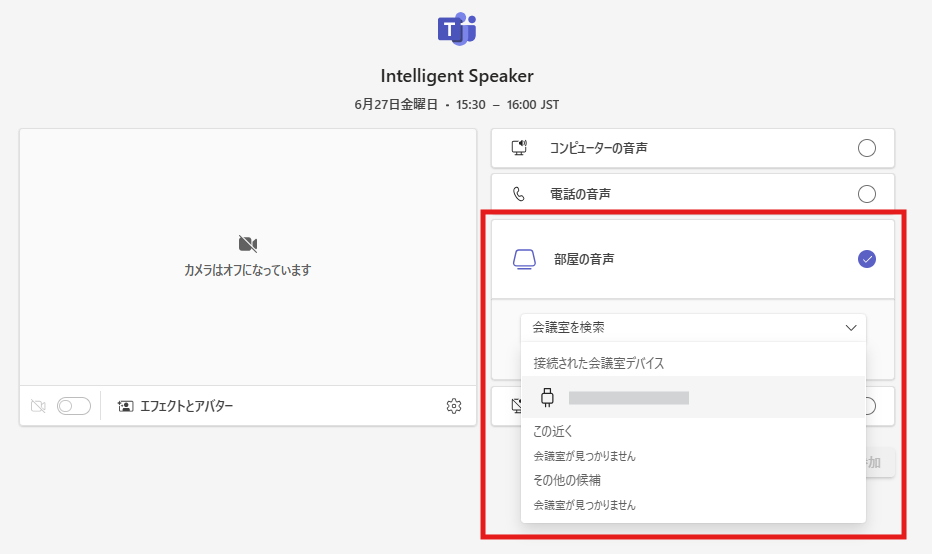

こんにちは。 Unified Communications サポート チームです。
いつも Microsoft Teams をご利用いただきありがとうございます。
Teams 会議での Intelligent Speaker (音声認識) について、概要とよくある質問をおまとめしています。
Intelligent Speaker についての不明点がある場合には、本記事をご参照いただければ幸いでございます。
Intelligent Speaker (音声認識) とは
Intelligent Speaker をご利用いただくことで Teams 会議のトランスクリプトにて誰が話しているのかを識別することが可能になります。
Intelligent Speaker は Teams Rooms もしくは BYOD ルームにてご利用可能です。
詳細についてはこちらの公開情報をご参考にしていただけますと幸いです。
なお、音声の話者まで識別する際には識別したいユーザーごとに音声プロファイルの登録が必要です。
音声プロファイルを登録していない場合には、トランスクリプトにて話者の名前は表示されず、”話者 1” のように表示されます。
音声プロファイルの登録方法はこちらをご確認くださいませ。
※ 音声分離機能についての公開情報ですが、音声プロファイルの登録方法は同じです。
必須要件
必須要件はこちらの公開情報の “要件と推奨事項” をご参照ください。
BYOD ルームとは
BYOD ルームとは、個人の PC と音声デバイスを使用して Teams Rooms のように Teams 会議に参加できる機能のことを指します。
音声デバイスを接続し、Teams 会議へ参加する際に [部屋の音声] より接続した音声デバイスを選択し、[参加] いただくことで BYOD ルームとして Teams 会議に参加できます。
※ この時、 [部屋の音声] を選択して参加したユーザーを “ルーム ホスト“ と呼びます。

BYOD ルームをご利用いただくためには以下のいずれかのライセンス / サブスクリプションが必要です。
- Teams を含む Microsoft 365 もしくは Office 365 サブスクリプション
- Microsoft Teams Enterprise ライセンス
よくある質問
Q1. Intelligent Speaker を利用するために必要なライセンスは何ですか？
A1. Intelligent Speaker を利用するために必要なライセンスは Teams Rooms と BYOD ルームで異なり、以下の通りです。
- Teams Rooms: Teams Rooms Pro ライセンスを Teams Rooms にサインインしているリソース アカウントに割り当てる必要があります
- BYOD ルーム: Teams Premium または Microsoft 365 Copilot ライセンスをルーム ホストに割り当てる必要があります
Q2. トランスクリプトにて名前が表示されず、”話者 1” と表示されるのはなぜですか？
A2. Intelligent Speaker にて、ユーザーの名前が表示されるための以下の条件を満たしていない可能性があります。
- ユーザー名を表示したいユーザーが当該会議に招待されている
- ユーザー名を表示したいユーザーの音声プロファイルがテナントに登録されている
- 会議ポリシーの
RoomAttributeUserOverrideがAttributeに設定された会議ポリシーがルーム ホストもしくはリソース アカウントに割当たっている
なお、 RoomAttributeUserOverride は Set-CsTeamsMeetingPolicy コマンドレットを使用して以下のように設定可能です。
1 | Install-Module MicrosoftTeams |
詳細についてはこちらをご確認ください。
Q3. ゲスト ユーザーおよび外部ユーザーは Intelligent Speaker を利用できますか？
A3. ゲスト ユーザーおよび外部ユーザーの音声も識別されますが、ユーザー名の表示はされません。
Intelligent Speaker ではリソースアカウントおよびルーム ホストが存在しているテナントに登録された音声プロファイルを使用して話者を識別します。
ゲスト ユーザーおよび外部ユーザーは当該テナントへ音声プロファイルを登録できないため、ユーザー名の表示はできません。
Q4. Intelligent Speaker を利用するために Teams Rooms Pro Management Portal への登録は必要ですか？
A4. いいえ、Intelligent Speaker を利用するにあたっては Teams Rooms Pro Management Portal への登録は必要ありません。
NOTE:
- 2025 年 7 月 23 日に、初版を公開しました。
※本情報の内容（添付文書、リンク先などを含む）は、作成日時点でのものであり、予告なく変更される場合があります。